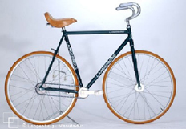
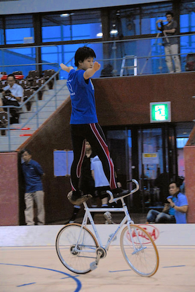
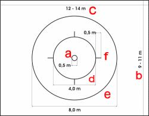
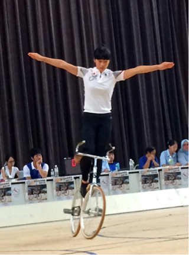

概要

サイクルフィギュアは、英語でアーティスティックサイクリングと呼ばれ、 ドライビングエリア（サイクルサッカーのコートと同じ）内で演技の美しさや 難しさを競うスポーツです。バランス、集中力、勇気を必要とする難しい技を 展開させるところがフィギュアスケートや体操競技と似ています。 サイクルフィギュアは華麗かつ繊細な競技と言えます。ルール

種目
男子シングル、女子シングル、女子ペア、ペア（男子ペアまたは男女ペア）、チーム(4人、6人制)の部門があります。自転車
サイクルフィギュア用のもので、前後のギヤ比は1対1。 ハンドルは、競技者が上に乗れる様な形になっています。バック走行も可能です。コート図面
- センターポイント
- ドライビングエリア・ショ-トサイド
- ドライビングエリア・ロングサイド
- インナーサークル直径4m
- アウターサークル直径8m
- クオーターサークルマーク
演技時間
５分間演技
サイクルフィギュアの技には難易度に合わせ、きめ細かく、点数が設定されています。 技の種類は、二輪走行系、ターンジャンプ系、移行系、倒立走行やスピンなどが有ります。 演技者は定義された技の中から30種目を選び出し、演技中に流す音楽と共に申請します。 演技者は５分間内で30種目をやり終える必要があります。 当然、難易度の高い技を30種類揃えることが高得点へつながります。 しかし、難易度の高い技は、体力を要するものや、やり終えるのに時間を要するものが多くあります。 従って、演技構成によっては、体力を使い果たしてしまったり、30種目やり終えることが 出来なくなってしまう等、かえって大きな減点につながってしまいます。 演技構成も重要な要素である種目と言えます。審査
競技は種目別に、審査による採点方式で競います。 ディフィカルテイージャッジ（技術点）と、パフォーマンスジャッジ（演技点）に分かれ、減点方式で行います。 ディフィカルテイージャッジは、技の完成度を評価します。技の完成度が低かったり、走行距離が不十分であったりすると、減点になります。 パフォーマンスジャッジは、ふらつきや落車があったかどうかが審査されます。たとえ技が完全に行われても、その際の動作にふらつきや乱れがあった場合には減点の対象となります。伸ばした手足が少しでもぶれても減点対象となるため、演技者には高い集中力が求められます。 前方への走行だけでなく、後方への走行、あるいはウィリー(一輪乗り)などの走行の仕方があり、点数が変わってきます。 また、ウイリー中にポジションを変える移行系の技や、ターンなども大きいウエイトを占めています。 走行系の技ではハーフサークル（半円）、サークル（円）または、エイトサークル（８の字）を描ききらないと減点となります。 ペアの競技では、５分間の間に２台の自転車での演技と、１台の自転車での２人乗りの演技を行う必要があります。 ２台の時は二人が同時に同じ技を行い、同調性も採点の対象になります。 １台の自転車での二人乗りの演技では、技と技の切り替えを１台の自転車の上で行うことになります。 そこでスムーズに切り替えられない場合には、規定時間内に行える技の数が少なくなってしまい、大きな減点対象となります。歴史
１９世紀の後期に自転車を娯楽として楽しむ人たちやクラブが、お祭りや集会などで自転車ショーとして、
アクロバティックな曲乗りからグループによるマスゲーム的なものまでバラエティーに富んだ競技会が開催されました。
現在の競技規則の原形が取り入れられたのは、１９２８年にドイツ選手権大会が開催されたのが始まりで、
以後、ヨーロッパ選手権に拡大されました。
１９５６年のコペンハーゲン大会から世界選手権が開催されるようになりました。現在は２０カ国以上の選手が参加しています。
日本での取り組み

１９７８年に日本サイクルサッカー連盟（現日本室内自転車競技連盟）内にサイクルフィギュア委員会が設立され、
１９８５年から全日本選手権大会が行われるようになりました。
１９９８年の第１回アジア大会では、女子シングルで優勝、男子シングル準優勝という記録を残しました。
その後選手層の厚い香港、澳門に後れを取っていますが、近年若い選手が育ってきており、アジアタイトル奪還が期待できます。
日本での全競技人口は未だ少数で、世界選手権入賞を目指すにはよりいっそうの普及・育成が必要です。